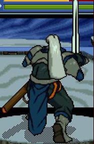
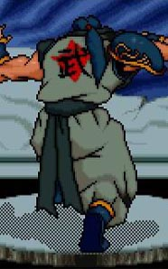
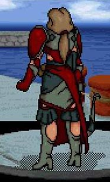
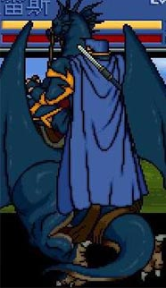
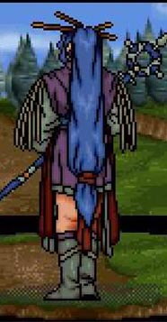
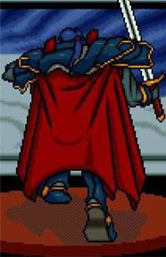
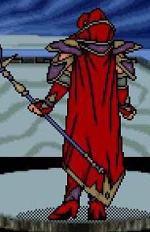
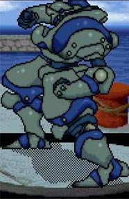
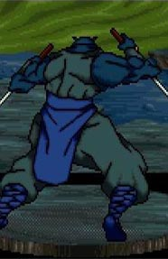
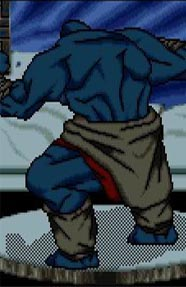

来源：炎龙之家 作者：小藤 日期：2008-2-17

有着不错且平均的能力，剑士的战斗特性是防御与攻击兼备的形式。由于身上佩戴的是轻型铠甲，因此拥有不错的机动力，在进攻时经常可以发挥适时的攻击力。并且一些修炼至一定火候的高级剑客，可以将身心与手中所持的利剑合而为一，从而打出一道类似气流的远程攻击剑法，攻击威力甚是惊人。
剑无疑是所有剑客的必备武器，剑本身具有灵巧强大的攻击特性。在战争中，武艺高强者多使用剑类的武器。在上古的历史中，由许多剑被持有者或打造者赋予魔法和神圣之力，使得武器的继承者往往会获得超于常人的反应及战斗力。剑士主要以穿戴皮甲类防具为主，皮甲有着防御力颇高和穿戴轻便的优势，这使得剑士系职业有着得天独厚的闪避率。
索尔、铁诺、蜜蒂、罗德曼、米亚斯多德、凯拉斯、巴拿罗西亚、圣寇拉斯
哈诺、哈瓦特



本职业是所有兵种中最强大的一种，有着非凡的攻击与防卫特点，这是其他各系所不及的。而且移动力高的优势更使得骑士系在战场之中向来扮演着机动部队的角色，加之空格攻击令敌人无法给与反击，骑士系毫无疑问完全可以做为前锋部队的主力人员。在转职后，可分出圣骑士与龙骑士两种。前者有着强大的攻防能力，多有一击必杀的特性；而后者虽防御力略有逊色，但其完全不受地形因素的九格移动力和无视大地系法术的制空特点，是牵制敌人行动的最佳优势。
枪矛和战戟是骑士们的第一武器，具有近程冲锋与远程投射的特性，因此在武器中占有着不可小看的一席之地。特别是战戟类，既可直刺又可斜劈，外加骑士着装重铠甲，因此直线的冲击力极强，往往可对敌人造成不可估量的重创。骑士穿戴的均为铠甲和锁甲类防具，重装上阵虽然会对自身速度带来一些负面影响，但是在战场上永不可挡的骑士无论何时都将是部队的核心战斗力。
亚雷斯、洛娜、莱汀、莎拉、兰斯洛特






上一篇：FD2设定音乐音效 下一篇：从猜想到实现，炎龙2极限挑战流程1
TOP↑ 返回>>